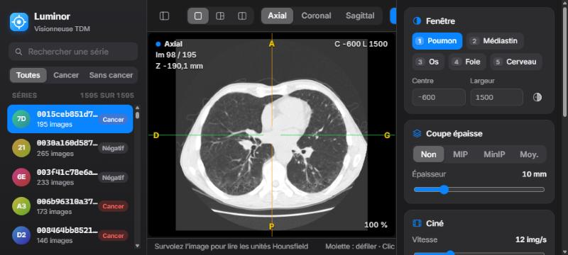
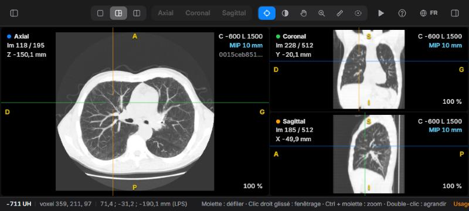
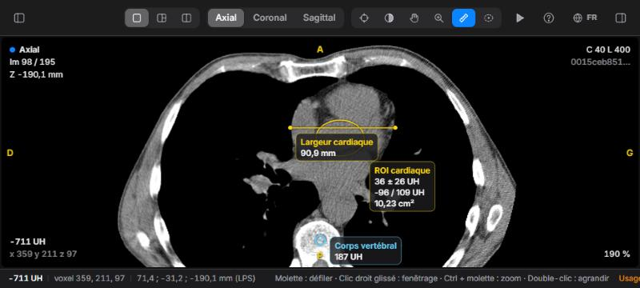
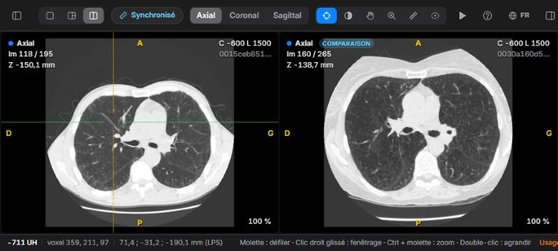
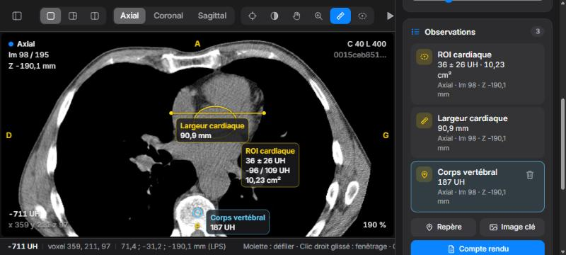
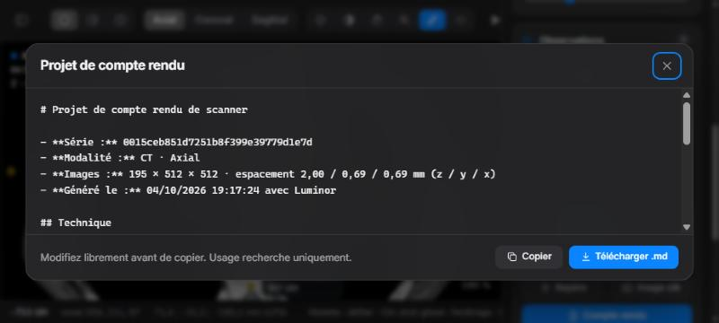

Lire un scanner avec Luminor
Luminor est une visionneuse de scanner (TDM) rapide, qui fonctionne en local et s’articule autour des sept gestes que les radiologues utilisent le plus. Ce guide vous accompagne pour chacun d’eux, de l’ouverture d’un examen à l’export d’un projet de compte rendu.
Usage réservé à la recherche et à l’enseignement. Luminor n’est pas un dispositif médical certifié. Ne l’utilisez pas pour prendre des décisions diagnostiques ou thérapeutiques.
Luminor s’affiche en français ou en anglais. Ce guide décrit l’interface en français : choisissez la langue avec le bouton FR / EN de la barre d’outils (voir Langue de l’interface).
2Prise en main
Démarrer Luminor
- Ouvrez une fenêtre PowerShell dans le dossier
Claude-Radio. - Lancez
.\start.ps1. Le script utilise l’environnement AnacondaDICOMs’il existe, démarre le serveur sur le port 8770 et ouvre votre navigateur au bout de deux secondes. - Gardez la fenêtre PowerShell ouverte pendant votre travail. La fermer arrête Luminor.
Luminor fonctionne à l’adresse http://127.0.0.1:8770/ dans Chrome, Edge, Safari ou Firefox. Options :
| Commande | Effet |
|---|---|
.\start.ps1 -Port 9000 | Utiliser un autre port si le 8770 est occupé. |
.\start.ps1 -DataDir "D:\scans" | Lire les séries dans un autre dossier. Chaque sous-dossier correspond à une série de fichiers .dcm. |
python server.py --labels fichier.csv | Fichier CSV facultatif id,cancer, utilisé pour les étiquettes et le filtre de la bibliothèque. |
Ouvrir une série
La bibliothèque, à gauche, liste toutes les séries du dossier de données. Cliquez sur une ligne pour l’ouvrir. Luminor lit d’abord les fichiers DICOM (quelques secondes), puis charge le volume dans le navigateur. Une carte de progression affiche les deux étapes.
- Le champ Rechercher une série filtre par identifiant de série. Saisissez n’importe quelle partie de l’identifiant.
- Toutes · Cancer · Sans cancer filtre selon l’étiquette du jeu de données. Les lignes portent une pastille rouge Cancer ou grise Négatif.
- Le nombre d’images s’affiche dès que les dossiers ont été comptés. En attendant, la ligne indique Comptage….
- Au démarrage suivant, Luminor rouvre la dernière série consultée.
Langue de l’interface
Le bouton FR / EN (avec un globe) de la barre d’outils fait passer toute l’interface du français à l’anglais et inversement, sans recharger l’examen : libellés, aide, observations, projet de compte rendu et informations affichées sur l’image. Luminor mémorise votre choix ; au premier lancement, il suit la langue du navigateur.
En français, Luminor applique les conventions habituelles : unités UH, virgule décimale (90,9 mm), fenêtre notée C (centre) et L (largeur), repères D/G (droite/gauche). Les noms donnés aux observations restent tels que vous les avez saisis.
3L’interface

- 1Bibliothèque : liste des séries, recherche, filtre par étiquette et bouton de comparaison.
- 2Barre d’outils : disposition, plan, outils, ciné, aide, affichage des panneaux.
- 3Visionneuse : une à trois vues d’image. La vue active a un contour bleu.
- 4Surimpression : plan, numéro d’image, position, fenêtre, coupe épaisse, UH et zoom.
- 5Barre d’état : UH, voxel et coordonnées patient sous le curseur.
- 6Inspecteur : fenêtre, coupe épaisse, ciné, observations et informations de la série.
La barre d’outils
| Commande | Rôle |
|---|---|
| Boutons de panneau (aux deux extrémités) | Afficher ou masquer la bibliothèque et l’inspecteur. Sur les petits écrans, les deux sont masqués au démarrage. |
| Disposition : Simple · MPR · Comparaison | Un seul plan, trois plans reliés, ou deux examens côte à côte (L pour passer de l’un à l’autre). |
| Synchronisé | Visible en disposition Comparaison. Synchronise le défilement, le zoom et le déplacement entre les deux examens (K). |
| Plan : Axial · Coronal · Sagittal | Plan affiché en dispositions Simple et Comparaison (A C S). |
| Outils | Action du bouton gauche de la souris : Réticule X, Fenêtrage W, Déplacer H, Zoom Z, Distance M, ROI elliptique E. |
| Lecture | Lance ou arrête le ciné (Espace). |
| ? | Aide-mémoire clavier et souris, avec un lien vers ce guide. |
| FR / EN | Langue de l’interface : français ou anglais. |
Lire les informations à l’écran
| Coin | Affiche |
|---|---|
| En haut à gauche | Nom et couleur du plan (axial, coronal, sagittal), numéro d’image (Im) et position de la coupe en mm (Z en axial, Y en coronal, X en sagittal). Une pastille COMPARAISON signale l’examen de comparaison. |
| En haut à droite | Centre (C) et largeur (L) de la fenêtre, INV si l’image est inversée, la coupe épaisse active (par exemple MIP 10 mm) et l’identifiant de la série. |
| En bas à gauche | Densité en UH et indices du voxel sous la souris. |
| En bas à droite | Niveau de zoom. |
| Bords (en jaune) | Orientation du patient : D/G droite/gauche, A/P antérieur/postérieur, S/I supérieur/inférieur. Comme sur toute console de radiologie, la droite du patient est à gauche de l’image axiale. |
Vérifiez toujours les repères d’orientation avant de décrire une latéralité. Ils sont calculés à partir des balises DICOM d’orientation de chaque série. Si l’interface est en anglais, les repères deviennent R/L : R (right) = droite, L (left) = gauche.
4Défilement et ciné
Le défilement de la pile d’images est au cœur de la lecture d’un scanner. Il est donc toujours affecté à la molette, quel que soit l’outil sélectionné.
| Action | Résultat |
|---|---|
| Molette | Une image par cran. Les pavés tactiles défilent de façon continue. |
| Maj + molette | Cinq images par cran. |
| ↑ ↓ (ou ← →) | Une image. Ajoutez Maj pour cinq. |
| Page préc. Page suiv. | Dix images. |
| Origine Fin | Première ou dernière image. |
| Espace | Lance ou met en pause le ciné dans la vue active. La lecture reprend à la première image en fin de série. |
Réglez la vitesse du ciné (2 à 40 images par seconde) avec le curseur Vitesse de la carte Ciné de l’inspecteur. Le ciné et le clavier agissent sur la vue active : celle qui se trouve sous la souris, entourée de bleu.
5Fenêtrage
Une image de scanner contient bien plus de niveaux de gris qu’un écran ne peut en afficher. La fenêtre choisit la plage d’unités Hounsfield affichée : le centre (niveau) fixe le gris moyen et la largeur règle le contraste.
Préréglages
Les touches 1 à 5 fonctionnent aussi sur un clavier AZERTY, avec ou sans Maj, ainsi que sur le pavé numérique.
| Touche | Préréglage | Centre / largeur (UH) | Usage |
|---|---|---|---|
| 1 | Poumon | −600 / 1500 | Parenchyme, nodules, voies aériennes |
| 2 | Médiastin | 40 / 400 | Cœur, vaisseaux, ganglions, tissus mous |
| 3 | Os | 400 / 1800 | Côtes, rachis, fractures, lésions lytiques ou condensantes |
| 4 | Foie | 60 / 160 | Lésions hépatiques peu contrastées |
| 5 | Cerveau | 40 / 80 | Fenêtre étroite des tissus mous |
Réglage libre
- Clic droit glissé sur n’importe quelle image, quel que soit l’outil. Glissez à gauche ou à droite pour rétrécir ou élargir la fenêtre. Glissez vers le bas ou vers le haut pour monter ou baisser le niveau : l’image s’assombrit quand vous descendez. La sensibilité s’adapte à la largeur courante, ce qui facilite les réglages fins dans les fenêtres étroites.
- Ou sélectionnez l’outil Fenêtrage (W) et utilisez le bouton gauche.
- Ou saisissez des valeurs précises dans Centre et Largeur dans l’inspecteur.
- I inverse les niveaux de gris.
La fenêtre s’applique à toutes les vues, y compris l’examen de comparaison : les deux sont toujours affichés de la même façon.
6MPR et réticule

Les reconstructions multiplanaires (MPR) recalculent des images coronales et sagittales à partir de la pile axiale, avec des proportions physiques exactes et la tête en haut.
- Choisissez MPR dans le sélecteur de disposition, ou appuyez sur L.
- Sélectionnez l’outil Réticule (X). Cliquez ou glissez dans une vue pour placer le réticule. Les deux autres vues se placent sur ce point.
- Faites défiler une vue. La ligne correspondante se déplace dans les deux autres.
- Double-cliquez sur une vue pour l’agrandir. Double-cliquez à nouveau pour revenir aux trois vues.
Les lignes du réticule prennent la couleur du plan qu’elles représentent : bleu pour l’axial, vert pour le coronal, orange pour le sagittal.
Pour lire toute une série dans un autre plan, appuyez sur C ou S : la disposition Simple passe en coronal ou en sagittal. A revient à l’axial.
Zoom et déplacement
- Ctrl + molette (ou le pincement sur un pavé tactile) zoome autour de la position de la souris, de 25 % à 1200 %.
- Le clic central glissé déplace l’image, quel que soit l’outil. Les outils Déplacer (H) et Zoom (Z) font de même avec le bouton gauche.
- R réinitialise le zoom et le déplacement.
7Mesures

Mesure de densité
Survolez n’importe quelle image. La surimpression (en bas à gauche) et la barre d’état indiquent la densité en UH du voxel, ses indices et ses coordonnées patient en millimètres (convention LPS : +X vers la gauche du patient, +Y vers l’arrière, +Z vers le haut). La mesure lit toujours le voxel d’origine, même quand une coupe épaisse est affichée.
Distance
- Sélectionnez Distance (M).
- Glissez d’un bord à l’autre de la structure. La distance en millimètres s’actualise pendant le tracé.
- Relâchez pour l’enregistrer comme observation.
Les distances tiennent compte de la taille réelle des pixels du plan. Elles restent donc exactes sur les reconstructions coronales et sagittales, où l’espacement des coupes diffère de la taille des pixels.
ROI elliptique
- Sélectionnez ROI elliptique (E).
- Tracez le rectangle englobant de l’ellipse sur la région.
- Relâchez. Luminor affiche la moyenne ± écart-type, le minimum / maximum en UH et la surface.
Les statistiques de ROI sont calculées sur l’image d’origine seule, jamais sur une coupe épaisse MIP, MinIP ou moyenne : les valeurs restent de vraies unités Hounsfield. Placez la ROI bien à l’intérieur de la structure pour éviter l’effet de volume partiel avec les tissus voisins.
Repères
Appuyez sur B (ou sur le bouton Repère) pour poser un repère à la position du réticule. Il enregistre la densité en UH en ce point. C’est pratique pour signaler une lésion à revoir.
Sélectionner et supprimer
Les mesures n’apparaissent que sur l’image où elles ont été tracées. Cliquez sur une mesure (avec l’outil réticule, distance ou ellipse) pour la sélectionner : elle devient bleu clair. Suppr efface l’observation sélectionnée ; Échap la désélectionne ou annule un tracé en cours.
8MIP et coupes épaisses
Une coupe épaisse combine plusieurs images voisines en une seule, centrée sur l’image courante. Choisissez le mode dans la carte Coupe épaisse de l’inspecteur, ou appuyez sur T pour passer d’un mode à l’autre.
| Mode | Conserve | Indications |
|---|---|---|
| MIP | La valeur la plus élevée dans l’épaisseur | Nodules pulmonaires (ils se distinguent des vaisseaux), vaisseaux, calcifications |
| MinIP | La valeur la plus basse | Voies aériennes, emphysème, piégeage aérique |
| Moy. | La valeur moyenne | Réduction du bruit sur les coupes fines |
Réglez l’épaisseur de 2 à 40 mm avec le curseur ou avec + / −. La surimpression indique l’épaisseur réellement utilisée, arrondie à un nombre entier de coupes. Les coupes épaisses fonctionnent dans tous les plans et dans toutes les vues.
Une bonne méthode de recherche de nodules : fenêtre pulmonaire (1), MIP de 8 à 10 mm (T), puis défilement lent de l’apex à la base. Toute image arrondie qui ne se raccorde pas à un vaisseau au fil du défilement mérite d’être revue sur les coupes fines.
9Comparaison

- Dans la bibliothèque, survolez la série à comparer et cliquez sur le bouton ⧉ de sa ligne.
- Luminor passe en disposition Comparaison. L’examen de comparaison s’ouvre à la même hauteur relative dans le corps que votre image courante.
- Faites défiler l’une ou l’autre vue. Tant que Synchronisé est actif, l’autre suit de la même distance en millimètres, même si les deux examens n’ont pas le même espacement de coupes. Le zoom et le déplacement sont aussi reproduits.
Aligner deux examens
Un patient n’est jamais positionné deux fois exactement de la même façon. Alignez donc une fois les examens sur un repère anatomique (par exemple la carène ou une lésion) :
- Appuyez sur K pour désynchroniser.
- Amenez chaque vue sur le même repère.
- Appuyez de nouveau sur K. Luminor enregistre le décalage entre les deux examens, qui défilent désormais ensemble à des niveaux correspondants.
Changer de plan recentre l’examen de comparaison : réalignez après être passé de l’axial au coronal ou au sagittal. Les mesures et les repères se font sur l’examen courant (vue de gauche).
10Observations et compte rendu

Gérer les observations
- Renommer : cliquez sur le nom, saisissez-en un nouveau (par exemple « Nodule LSD ») et appuyez sur Entrée. Le nom s’affiche aussi sur l’image.
- Y aller : cliquez sur une observation pour afficher directement son image. Le réticule se centre dessus et Luminor change de plan si nécessaire.
- Supprimer : survolez l’observation et cliquez sur l’icône de corbeille, ou sélectionnez-la et appuyez sur Suppr.
- Les observations sont enregistrées automatiquement sur votre ordinateur, un fichier par série dans
Claude-Radio/data/findings/. Elles réapparaissent quand vous rouvrez la série.
Projet de compte rendu

Cliquez sur Compte rendu dans la carte Observations. Luminor rédige un projet comprenant les informations de la série, une ligne de technique, la liste numérotée de vos observations avec valeurs et localisations, et une section Conclusion vide. Le projet est rédigé dans la langue de l’interface. Complétez vous-même le temps d’injection, le protocole et la conclusion. Cliquez ensuite sur Copier pour le coller dans votre compte rendu, ou sur Télécharger .md pour l’enregistrer (fichier compte-rendu_….md).
Images clés
Image clé enregistre la vue active au format PNG, avec les mesures, les informations affichées, les repères d’orientation et la mention « usage recherche uniquement ». Le nom du fichier contient la série, le plan et le numéro d’image, par exemple key-image_0015ceb8_axial_98.png.
11Une routine de lecture
Une routine systématique proposée pour un scanner thoracique, à adapter à votre pratique.
- Poumons : appuyez sur 1, faites défiler de l’apex à la base, puis recommencez avec une MIP de 10 mm (T) pour les nodules. Utilisez la MinIP pour les voies aériennes.
- Médiastin : appuyez sur 2. Examinez le cœur, les gros vaisseaux, l’œsophage et les aires ganglionnaires. Mesurez les ganglions selon leur petit axe (M).
- Os : appuyez sur 3. Lisez le rachis en sagittal (S), le sternum et les côtes en axial et en coronal.
- Étage abdominal supérieur : appuyez sur 4 pour le foie, puis examinez les surrénales, les reins et la rate.
- Caractériser : confirmez chaque anomalie en MPR, mesurez-la et placez des ROI pour en vérifier la densité (graisse, liquide, tissu, calcium).
- Comparer : ouvrez l’examen antérieur, alignez-le et déterminez si les lésions sont nouvelles, stables ou modifiées.
- Rédiger : nommez vos observations, enregistrez les images clés, puis ouvrez Compte rendu et complétez la conclusion.
12Clavier et souris
Appuyez sur ? (ou /) dans Luminor pour afficher cette liste. Les raccourcis sont ignorés pendant la saisie dans un champ de texte : cliquez sur une image pour revenir à la visionneuse.
| Entrée | Action |
|---|---|
| Molette · ↑ ↓ | Image précédente / suivante |
| Maj + molette ou flèches | Cinq images |
| Page préc. / Page suiv. | Dix images |
| Origine / Fin | Première / dernière image |
| Espace | Lecture / pause du ciné |
| Clic droit glissé | Fenêtrage |
| Clic central glissé | Déplacement |
| Ctrl + molette | Zoom à la position de la souris |
| Double-clic | Agrandir / restaurer la vue |
| 1 – 5 | Fenêtre poumon · médiastin · os · foie · cerveau |
| I | Inverser |
| R | Réinitialiser le zoom et le déplacement |
| A · C · S | Axial · coronal · sagittal |
| L | Changer de disposition : Simple → MPR → Comparaison |
| T | Coupe épaisse : aucune → MIP → MinIP → moyenne |
| + / − | Épaisseur de coupe ± 2 mm |
| X · W · H · Z | Outil réticule · fenêtrage · déplacement · zoom |
| M · E | Outil distance · ROI elliptique |
| B | Repère à la position du réticule |
| Suppr | Supprimer l’observation sélectionnée |
| K | Synchroniser / désynchroniser la comparaison |
| Échap | Annuler le tracé / désélectionner |
13Valeurs de référence en UH
Valeurs habituelles sans injection de produit de contraste, données à titre indicatif pour la mesure de densité et la ROI. Elles varient selon l’appareil, le protocole, l’injection et le bruit.
| Tissu ou matériau | UH habituelles |
|---|---|
| Air | ≈ −1000 |
| Poumon aéré | −900 à −500 |
| Graisse | −120 à −60 |
| Eau, liquide simple | 0 à 20 |
| Tissus mous, muscle | 20 à 60 |
| Sang non injecté | 30 à 45 |
| Hémorragie aiguë | 50 à 90 |
| Calcification, os cortical | > 300, jusqu’à 2000 et plus |
14Dépannage
| Problème | Solution |
|---|---|
| La page ne s’affiche pas | Le serveur n’est pas lancé. Exécutez .\start.ps1 et gardez sa fenêtre ouverte. |
| « Port already in use » | Luminor est probablement déjà lancé : ouvrez 127.0.0.1:8770. Sinon, démarrez-le avec -Port 9000. |
| « Impossible d’ouvrir la série » | Le dossier doit contenir des fichiers .dcm lisibles d’une seule série. Consultez l’erreur dans la fenêtre PowerShell. |
| L’ouverture est lente | La première ouverture lit tous les fichiers DICOM (quelques secondes par examen). Les trois derniers examens restent en mémoire et se rouvrent rapidement. |
| L’image est toute noire ou toute blanche | La fenêtre ne correspond pas au tissu. Appuyez sur 1 ou 2. |
| Les touches ne font rien | Un champ de texte a le focus (recherche, valeurs de fenêtre, nom d’observation). Cliquez sur une image. |
| L’interface est en anglais | Cliquez sur le bouton EN de la barre d’outils pour passer en français. |
| Le défilement saute des images | Certaines souris envoient de grands pas de molette. Utilisez les flèches pour avancer image par image. |
| « Impossible d’enregistrer les observations » | Le serveur s’est arrêté pendant votre travail. Relancez-le. Les observations antérieures étaient déjà enregistrées. |
| Le navigateur ralentit | Chaque examen occupe environ 100 Mo de mémoire, et la comparaison en garde deux. Fermez les autres onglets gourmands ou rechargez la page. |
15Confidentialité et limites
- Fonctionnement local. Le serveur n’accepte que les connexions de cet ordinateur (127.0.0.1). Les images et les observations n’en sortent jamais. La seule requête externe concerne la police Inter, chargée depuis Google Fonts ; sans connexion internet, Luminor utilise la police du système.
- Pas d’usage diagnostique. Luminor n’a été ni validé ni certifié comme dispositif médical. Utilisez-le pour la recherche, l’enseignement et l’exploration.
- Données. Luminor lit des séries de scanner stockées sous forme de dossiers de fichiers DICOM. Il ne se connecte pas à un PACS et ne prend pas en charge les formats multi-images ou compressés que pydicom ne sait pas décoder.
- Géométrie. Les reconstructions supposent une acquisition axiale standard avec des coupes régulièrement espacées, ce qui est le cas d’un scanner thoracique courant. Vérifiez les repères d’orientation sur les séries inhabituelles.
- Comptes rendus. Le projet de compte rendu ne reprend que ce que vous avez mesuré. Le contexte clinique, les détails techniques et la conclusion restent toujours à votre charge.